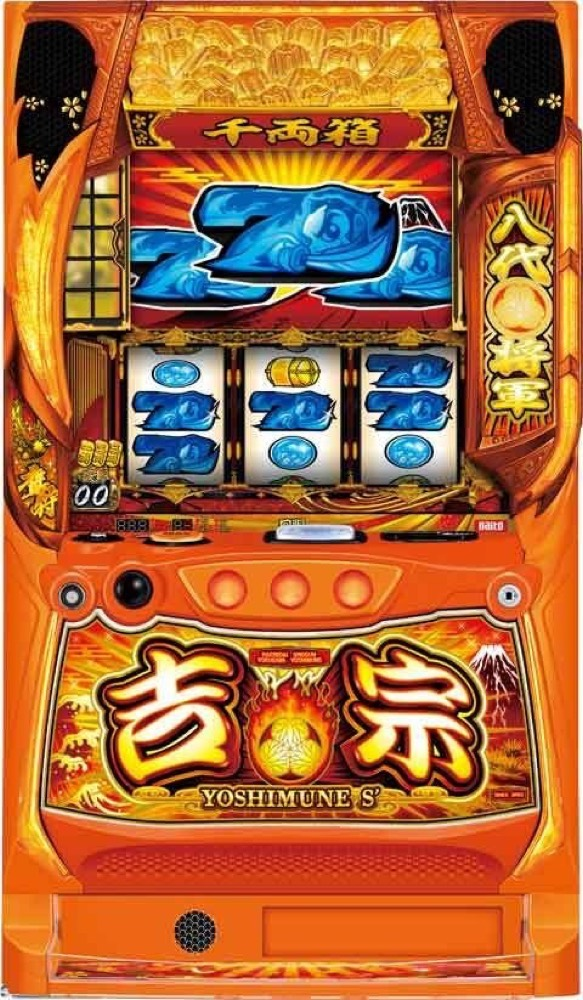

吉宗
BIG約711枚の一撃感。高確率から初当りをつかみ、1G連と裏鷹狩りで連チャンを伸ばす。
- 導入
- 2025年4月
- メーカー
- サボハニ
- 分類
- パチスロ
主要スペック
通常時の前兆、高確率・鷹狩り、BIG／REG、BONUS終了時の1G連ジャッジ、2個以上のストックから始まる裏鷹狩り、終了後の天国フォローまでを機種専用画面で体験できます。
- BIGは約711枚・REGは約72枚
- 50枚あたり約33G・純増約7.11枚/G
- 鷹狩りのBONUS期待度は約69%
- 裏鷹狩りは1G連ストック2個以上・期待枚数約3600枚
吉宗の見どころと計算条件
通常時の前兆、高確率・鷹狩り、BIG／REG、BONUS終了時の1G連ジャッジ、2個以上のストックから始まる裏鷹狩り、終了後の天国フォローまでを機種専用画面で体験できます。
スマスロ 吉宗を数字で早分かり
BONUS前兆からBIG／REG BONUS、裏鷹狩りループまでの流れと、設定ごとの結果差を固定レートで比較できます。
30秒で分かるスマスロ 吉宗
BIG約711枚を軸に、BONUS終了時の1G連と裏鷹狩りで一気に枚数を伸ばす高純増BONUSタイプです。
こんな遊び方に向いている
- 約711枚BIGの獲得感を味わいたい
- BONUS終了時のPUSHで1G連を開きたい
- 裏鷹狩りのループから大量獲得を狙いたい
遊ぶ前に確認したいこと
- 初当り・純増・主要BONUS枚数・鷹狩り期待度は公開値
- BONUS獲得枚数と1G連ストックを別表示
- 未公表の細かな振り分けは体験用代表値
高確率と鷹狩りからBONUSへ
通常時は規定ゲーム数や小役を契機に前兆へ進み、最終的にBONUSを告知します。最大天井は999G＋αです。
鷹狩りは高確率移行時の一部で突入し、BONUS期待度は約69%。当選時はBIGと次回天国が期待できる強い入口です。専用画面では前兆ゲームを最後まで進め、最終PUSHでBONUSを開きます。
BIG約711枚・REG約72枚
BIG BONUSは純増約7.11枚/Gで約711枚、REG BONUSは12枚俵のナビ8回までで約72枚です。設定ごとのBONUS初当りは約1/378.9〜約1/292.4です。
BIG中は3種類の告知タイプがありますが、体験では終了時まで1G連ストックの有無を伏せます。REGは俵8連やJACハズレなどで1G連を抽選します。
1G連ジャッジ
BONUS終了後はPUSHで1G連ストックを開きます。ストックがあれば次のBONUSはBIGとなり、約711枚を上乗せして再び1G連を抽選します。
Super BIGは1G連期待度約95%。出現率や通常BIG中のストック率など未公表の細部は、公表されている出玉性能を壊さない体験用代表値で構成します。
裏鷹狩り
1G連ストック2個以上を獲得した場合などは裏鷹狩りへ。滞在中に当選すればBIGが1G連し、失敗までループします。期待枚数は約3600枚です。
専用画面では18〜20Gの前兆を進め、最後のPUSHでBIG当落を表示。終了後は天国濃厚の流れを表示し、100G以内のフォロー結果まで確認できます。
固定条件と簡略化する範囲
- 約33G/50枚・1,000円46枚貸し・5.2枚交換で固定
- 設定1〜6を均等抽選し、BONUS初当り・出玉率は公開設定別値を使用
- 前兆、高確率、鷹狩り、BIG／REG、1G連、Super BIG、裏鷹狩り、天国フォローを専用進行
- BIG／REG比率、通常BONUS中のストック率、裏鷹狩り継続率など未公表部分は体験用代表値
- 19,000枚到達時はコンプリート表示
平均Gと投資目安の計算
掲載するBIG／REG BONUS初当り約1/378.9は設定1基準です。当サイトでは50枚あたり33G、1,000円46枚貸しの固定条件から、設定1基準の平均投資目安を約12,500円と計算します。
シミュレーターでは設定1〜6を均等抽選します。設定1〜6で公開されている初当り値を個別に使います。公開されていない特化ゾーン・上位到達率の設定差は加えません。 換金は5.2枚交換で固定し、結果とランキングに設定を表示します。
シミュレーション結果の見方
当るまでBONUS前兆・BIG／REG BONUSまでのゲーム数
設定設定1・2・3・4・5・6から抽選された今回の設定
上位到達裏鷹狩りと裏鷹狩りループへの到達
最終収支差枚と5.2枚交換の収支目安
結果は自動で「マイ記録」に保存され、同じ機種を何回試したか、最高収支、勝率をあとから確認できます。
簡易シミュレーターについて
BONUS前兆・BIG／REG BONUS・裏鷹狩りループの流れを固定条件で体験できます。JavaScriptを有効にすると、この位置にシミュレーター、演出、マイ記録、機種別ランキングが表示されます。
結果は娯楽・確率理解のための参考表示です。金銭的価値や交換価値はなく、実際の勝敗や収支を保証しません。18歳未満の方の利用はお控えください。
スマスロ 吉宗のよくある質問
スマスロ 吉宗はどんな台？
通常時の前兆、高確率・鷹狩り、BIG／REG、BONUS終了時の1G連ジャッジ、2個以上のストックから始まる裏鷹狩り、終了後の天国フォローまでを機種専用画面で体験できます。 BIGは約711枚・REGは約72枚が主な確認ポイントです。
スマスロ 吉宗の平均投資目安は？
設定1基準のBIG／REG BONUS初当り約1/378.9と、50枚あたり33G・46枚貸しの固定条件から、平均12,500円を目安として表示します。実際の設定や遊技状況で結果は変わります。
設定とゲームの流れはどう抽選する？
開始時に設定1・2・3・4・5・6から1つを均等抽選し、BONUS前兆、BIG／REG BONUS、裏鷹狩り、裏鷹狩りループの順で到達を判定します。設定は最終結果とランキングに表示します。
収支はどう計算する？
1,000円46枚貸し・5.2枚交換の固定条件で投資、換金、収支目安を計算します。実店舗の再プレイ、持ちメダル、端数処理は含みません。